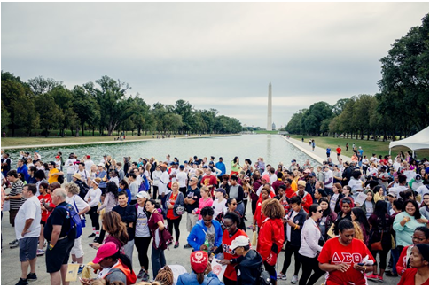

為愛前行, St. Jude Walk 2015全國慈善步行完美收官
時逢中秋，微涼入骨，然而氣溫卻撲不滅人們的抖擻精神，剛過八點，不少民眾已經自發在林肯紀念堂前集結成隊伍，屆時，全美58個城市的志願者們將一起走上街頭，支持St. Jude兒童研究及治療醫院為終結兒科癌症而舉行的慈善籌款遊行。
St. Jude Walk/Run 2015華盛頓地區盛況
癌症，讓人聯想到恐懼和死亡，很難把它與天真活潑的孩子聯繫到一起。然而，每年世界上有超過25萬兒童罹患癌症。今年，全美有16000名兒童被診斷患有癌症，每五個患兒中就有一個無法存活。
作為全美最大的為患癌兒童提供治療的非營利醫院，St. Jude無償收治來自全美50個州和世界各地的患癌兒童。同時為了提高世界各地罹患癌症和其他先天性疾病的兒童存活率，St. Jude國際拓展項目在17個國家建立了24個官方合作站，將愛心散播到更遠的地方。
St. Jude的大部分收入都來自社會善款，每年的慈善遊行讓更多人了解癌症給兒童和一個家庭造成的毀滅性打擊，讓更多人投入到對抗兒童癌症的戰役中來，消除比癌症更可怕的無知和冷漠。
iTalkBB成為本地贊助商及最佳團隊之一
致力於為海外華人提供更美好生活的電信企業iTalkBB今年是連續第三年參加St. Jude醫院為患癌兒童籌款慈善遊行。30多位iTalkBB員工，有的拉上連夜從外地趕來的子女，有的懷抱著剛出世的寶寶，大家一路揮舞著St. Jude的旗子，為拯救患癌兒童貢獻一份綿力。像往年一樣，iTalkBB是St. Jude的華盛頓地區的的贊助商及最佳團隊之一。已是第三年參加活動的Karen帶著丈夫和兒子一起參與到為遊行人群發放飲用水的服務中來。Karen感嘆，作為全美最大的為患癌兒童提供治療的非營利機構，St. Jude將每一美元善款中的83%投入癌症治療和研究，研究成果無償公布，被收治的兒童無需支付任何治療費用，這種理念和愛心讓她動容，也推動著她一次次的參與和付出。
iTalkBB員工和家屬熱情參與活動
St. Jude慈善遊行活動負責人JennyMcKenna則說，正是因為積極奔走的籌款者，St. Jude醫院才有能力支付患癌兒童的治療、旅行和食宿費用。如今，患癌兒童存活率已從1962年St. Jude建院時的20%提升到80%，數據背後凝聚了St. Jude和所有關愛患癌兒童的人們半個多世紀的堅持和努力。
Sr. Director, Regional Field Management of St. Jude. Jenny McKenna表示對iTalkBB感謝
9月恰逢全美患癌兒童關愛月，在9月最後一個周末，秋意漸濃的華府被人們的善意和熱情溫暖著。正如St. Jude所承諾的，“我們不會停止努力，直到沒有兒童死於癌症。”iTalkBB人,也將始終走在這條公益道路上，一如既往，為愛前行!